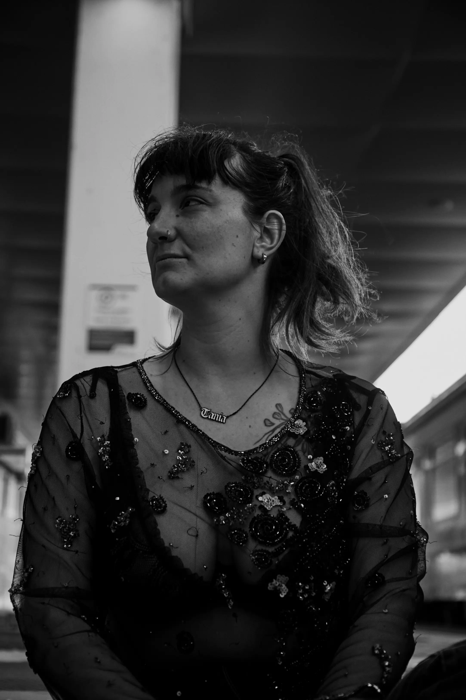
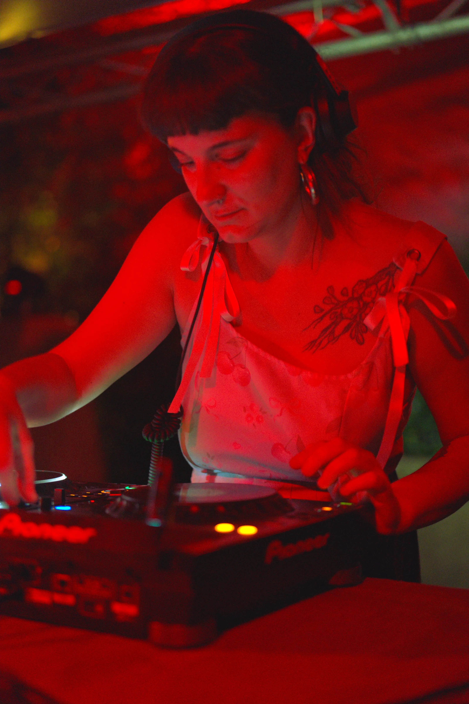

1. Prima di Tania Kim c’è Tania Gianni: ascoltatrice, appassionata e ricercatrice musicale. Qual è stato il tuo primo incontro davvero decisivo con la musica elettronica e quando hai capito che non ti bastava più stare a guardare la consolle, ma volevi essere tu a costruire il percorso musicale?
Penso di aver acquisito la consapevolezza di voler costruire un mio percorso musicale sin dagli anni dell’adolescenza. A casa mia non si è mai ascoltata musica, ma non ne faccio una colpa alla mia famiglia: vengo da un paesino molto piccolo del centro Italia in cui la cultura del lavoro, del sacrificio, del coltivare la terra non lasciano molto spazio a quelli che anche vagamente possano essere definiti “vezzi”, come ascoltare o fare la musica. Io mi sono sempre sentita diversa. E un po’ controcorrente, ho iniziato a macinare dischi, suonare basso e chitarra, cantare. L’elettronica l’ho scoperta che ero un po’ più grande: con i miei nuovi amici dell’università andavamo a ballare nei centri sociali e nei club di mezza Emilia-Romagna alla ricerca di questo o di quel DJ. La prima volta che ho sentito la Drum and Bass sull’impianto di un club ho avuto una folgorazione (NOISIA al Link di Bologna - mai avrei immaginato che 10 anni dopo avremo condiviso il palco nel loro Farewell Tour). Ho capito che volevo farlo anche io poco dopo, ascoltando una DJ mettere i dischi al CSO Capolinea a Faenza. C’erano meno donne all’epoca e la sua energia, tecnica e sicurezza in consolle mi colpirono molto.
2. Il tuo nome artistico, Tania Kim, sembra già suggerire la nascita di un’identità ulteriore. Come è nato questo nome e che cosa ti permette di esprimere, che forse Tania Gianni, nella vita quotidiana, tende a custodire?
Il mio nome d’arte è stato la naturale conseguenza di un nomignolo affibbiatomi dai miei “compagni di musica” dell’epoca giovanile. Ero una ragazza minuta, con i capelli biondo ossigenato e una vaga somiglianza con la bassista dei Sonic Youth (Kim Gordon). Kim era più semplice, corto e musicale. Con il tempo i due nomi si sono uniti, creando quello che è il mio alter ego: Tania Kim è la DJ in consolle, la persona con cui chiacchieri di musica al club, l’amica che ti aiuta in un momento di difficoltà, la collega con cui dividere le fatiche. Non la sento troppo come un’entità separata dalla Tania Gianni di tutti giorni, entrambe vivono di luci e ombre e momenti di contraddizione.
3. Resident Advisor ti definisce una “jungle techno selectress”, ma nei tuoi set attraversi techno, trance, house, jungle, breakbeat ed electro. In una scena che spesso chiede agli artisti di essere immediatamente riconoscibili attraverso un solo genere, quanto è importante per te difendere il diritto all’imprevedibilità?
Potrei rispondere con una sola parola, ovvero: FONDAMENTALE. Credo che un buon selector si riconosca dalla sua capacità di navigare tra generi e stili diversi mantenendo la sua impronta personale. Non c’è sensazione migliore di sorprendere il dancefloor con qualcosa che non si aspetta e vederlo reagire positivamente. Anche l’imprevedibilità può essere un segno distintivo. È un processo che richiede comunque una quantità di test, errori, esperienze anche negative e una certa dose di frustrazione per non volersi conformare ai canoni che citi. In un mondo che ci chiede un suono immediatamente riconoscibile da pochi secondi di video su Instagram e un’immagine ammiccante ma anche un po’ intellettuale, io preferisco essere più eclettica, analogica e reale.
4. Essere resident significa conoscere un dancefloor intimamente nel tempo, accompagnarne le trasformazioni e costruire un rapporto profondo con una comunità. In che modo il Tempio del Futuro Perduto ti ha permesso di crescere come artista e quanto la sua comunità ha contribuito a definire il suono che oggi riconosci come tuo?
Arrivo al Tempio spinta dal forte desiderio di immergermi nella sua realtà e di stringere un rapporto saldo con la sua comunità. Non mi ci sono trovata per caso, ma è stata una scelta consapevole che ha impattato enormemente su tutta la mia vita precedente, restituendomi però indietro una certa dosa della libertà artistica che tanto agognavo. Rispetto alle mie precedenti esperienze come DJ resident, ho finalmente trovato un luogo che mi ha spinto a maturare seriamente come professionista e come essere umano. Tempio per me è una dimensione fisica, spirituale e personale. La comunità che lo attraversa è speciale, si distingue così come il Tempio stesso si distingue da un qualsiasi altro club. Il mio sound si è sviluppato in maniera positiva e identitaria poiché ho avuto la possibilità di esprimere più liberamente quello che avevo dentro. Penso inoltre che lavorare in un ambiente sano mi abbia permesso di capire con molta più lucidità cosa volevo e cosa non volevo fare. Credo che questo mio primo anno da resident del Tempio sia stato davvero importante.
5. Hai condiviso la programmazione con figure molto diverse, da Octa Octa ed Eris Drew a Peaches, Boston 168 e DJ Nobu, confrontandoti con linguaggi che attraversano house, techno, punk, queer culture e sperimentazione. Quali incontri ti hanno segnata maggiormente e che cosa hai imparato osservando artiste e artisti con percorsi così radicali?
Sono stata davvero molto fortunata a conoscere e condividere lo stage con tanti artisti importanti ed effettivamente molto diversi tra loro. Una delle conoscenze che mi ha segnata di più è tra quelle che citi: ho avuto l’occasione di fare il warm up per Eris Drew e Octa Octa al Dekmantel Club Tour al Link di Bologna. Oltre che due grandi artiste, sono due persone estremamente umili e incredibilmente appassionate di musica. Parlando con loro ho veramente percepito come, pur essendo diventate delle grandi artiste internazionali, non abbiano mai perso quella passione e quella curiosità che ti spinge a muovere i primi passi in questo mondo. Penso che questo sia un grande insegnamento. Un’altra persona che mi ha incuriosito molto è Ellen Alien. Seppur totalmente su un altro “mood”, è stato interessante scambiare delle opinioni con un’artista così grande e importante nella storia della techno.

6. Con Ogni cosa EP, pubblicato da Italo Ghetto Records, il tuo percorso entra in una nuova fase: non soltanto selezionare e mettere in relazione la musica degli altri, ma generare un universo sonoro interamente tuo. Che cosa racconta questo lavoro e quali parti della tua identità sono emerse durante la produzione che ancora non riuscivi a esprimere nei DJ set?
Ogni Cosa EP è stato composto, arrangiato e preparato per l’uscita in pochi mesi seppur per me sia il punto di arrivo di un percorso durato un paio d’anni. Così come per il DJing, anche nella produzione musicale ho avuto bisogno del mio tempo per cercare la giusta strada. Questo lavoro vuole allontanarsi dal dancefloor per esplorare un immaginario più etereo ed emozionale, grazie alle parole recitate dalla mia collega e amica Silvia Fontana. L’idea ci è venuta durante “Corpi Elettronici”: una jam di arti in cui ho avuto qualche volta il piacere di collaborare come selettrice di musica, organizzata da Urban Dancing Prophets, il collettivo di danzatrici del Tempio. Produrre musica mi permette di esprimere al massimo la mia creatività e il mio animo eclettico, cosa che non sempre è possibile selezionando musica di altre persone.
7. Oggi sei una DJ e producer italiana che gira l’Europa, resident in uno spazio indipendente, dentro una scena elettronica che sta cercando nuovi linguaggi e nuovi modelli. Quale artista vorresti diventare nei prossimi anni e che cosa vorresti lasciare nelle persone quando, finite le luci e la musica, escono dal dancefloor dopo un tuo set?
Mi piacerebbe che le persone riuscissero a percepire lo stesso senso di leggerezza che provo io dopo aver abbassato il volume dell’ultima traccia del mio DJ set, e che vadano via con la sensazione e la curiosità di aver scoperto qualcosa di nuovo. Non mi interessa la fama, non mi interessano i follower. Vorrei vivere della mia arte, migliorarmi tecnicamente e professionalmente, girare il mondo ed essere felice.